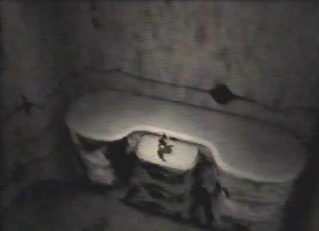

Diary Entry 1: Ruins Bottom Floors A Mysterious Dragon Saves my Life Somehow I'd survived the long fall after being shot by one of Craymen's men. It must have been a miracle, because my gunshot wound had completely healed! The underground ruins were so desolate and lonely. Images of my friends massacre ran rampant throughout my mind. I put them aside. I had to find a way to the surface, so I explored the ruins. While viewing my surroundings I came upon a finely crafted engraving of a dragon! I made my way to the back of the ruins. I found an ancient machine with two locks at each end. It looked like an elevator, my way out! Right next to the elevator, I found an ancient container of some sort, that contained an ancient gun with a unique dragon design. Also, along with the gun, I found an elevator key. I used the key on the left and right locks and the elevator started! I made my way to the top only to find my life in utter danger! Pure Type monsters were out for my blood. I tried to use my gun, but the damn thing didn't work! Just as I was about to be monster food, something amazing happened! Arrows of light shot down from above and completely destroyed the monsters. Soon after, a dragon flew down . I couldn't believe my eyes! As I looked down, the dragon flew straight up in front of me! When he drew closer, I fell to the ground with apprehension, as it came within arms reach. Suddenly, a strange light engulfed my body and I was shown a vision of the past and future. The feeling was indescribable. The dragon had chosen me as his new rider. We flew to the surface with complete confidence! |
|
| Divine
Overview |
|
1. Seek out the Elevator Key. Note: just for your own information, you can reset the game by holding A+B+C+L+R+Start, then let go. |
|
2. Don't forget to look up at the surrounding wall, as a mysterious engraving of a dragon can be seen! |
|
3. The elevator can be found at the back of the ruins. |
|
|
4. Lock-on to the left lock near the elevator. |
5. Lock-on to the right lock. |
 6. Ride the elevator to the surface. |
|
7. Pure Type monsters are out for Edge's Blood! |
|
8. Is Edge doomed to be monster food?! |
|
9. An Ancient Age dragon saves Edge's life! |
|
|
10. The dragon shows Edge a vision of the past and future. |
|
11. The dragon choses Edge as its new rider, they escape to the surface. |
|